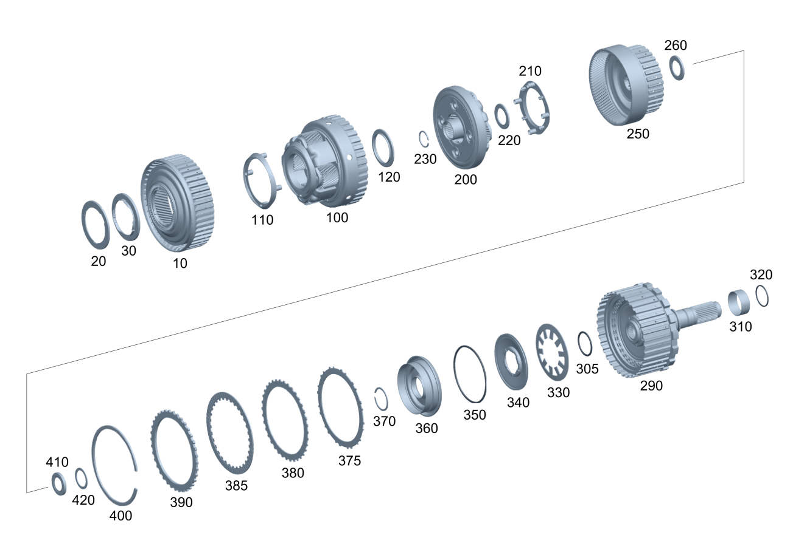

| № | Артикул | Название | Кол. | Примечание | Ограничение |
|---|---|---|---|---|---|
| 10 | A 725 270 10 10 | Коронная шестерня (HOHLRAD) | 1 | ||
| 20 | A 725 981 02 00 | - Осевой игольчатый ролик | 1 | ||
| 30 | A 725 981 00 00 | - Осевой игольчатый ролик | 1 | ||
| 100 | A 725 270 16 07 | Водило планет. передачи (PLANETENRADTRAEGER) | 1 | ||
| 110 | A 725 272 90 05 | - Маслоуловитель (OELFAENGER) | 1 | ||
| 120 | A 725 981 14 10 | - Осевой игольчатый ролик (AXIALNADELKRANZ) | 1 | ||
| 200 | A 725 270 42 13 | Водило планет. передачи (PLANETENRADTRAEGER) | 1 | 3A1/3A2/3A3/4A1/4A2/4A7/A301 | |
| 200 | A 725 270 04 16 | Водило планет. передачи (PLANETENRADTRAEGER) | 1 | A270+4A8 | |
| 200 | A 725 270 04 16 | Водило планет. передачи (PLANETENRADTRAEGER) | 1 | A270+4A9 | |
| 210 | A 725 272 91 05 | - Маслоуловитель (OELFAENGER) | 1 | 3A1/3A2/3A3/4A1/4A2/4A7/A301 | |
| 220 | A 725 981 16 10 | - Осевой игольчатый ролик (AXIALNADELKRANZ) | 1 | ||
| 220 | A 725 981 30 10 | - Осевой игольчатый ролик (AXIALNADELKRANZ) | 1 | A270 | |
| 230 | A 014 990 13 82 | Компенсационная шайба (AUSGLEICHSSCHEIBE) | 1 | 2,1MM | |
| 230 | A 014 990 14 82 | Компенсационная шайба (AUSGLEICHSSCHEIBE) | 1 | 2,3MM | |
| 230 | A 014 990 15 82 | Компенсационная шайба (AUSGLEICHSSCHEIBE) | 1 | 2,5MM | |
| 230 | A 014 990 16 82 | Компенсационная шайба (AUSGLEICHSSCHEIBE) | 1 | 2,7MM | |
| 230 | A 014 990 17 82 | Компенсационная шайба (AUSGLEICHSSCHEIBE) | 1 | 2,9MM | |
| 230 | A 009 990 43 82 | Регулировочный диск (EINSTELLSCHEIBE) | 1 | 2.00 MM | |
| 230 | A 009 990 44 82 | Регулировочный диск (EINSTELLSCHEIBE) | 1 | 2.20 MM | |
| 230 | A 009 990 45 82 | Регулировочный диск (EINSTELLSCHEIBE) | 1 | 2.40 MM | |
| 230 | A 009 990 46 82 | Регулировочный диск (EINSTELLSCHEIBE) | 1 | 2.60 MM | |
| 230 | A 009 990 47 82 | Регулировочный диск (EINSTELLSCHEIBE) | 1 | 2.80 MM | |
| 230 | A 009 990 48 82 | Регулировочный диск (EINSTELLSCHEIBE) | 1 | 3.00 MM | |
| 230 | A 725 272 46 07 | Компенсационное кольцо (AUSGLEICHSRING) | 1 | 2.70 MM | A270 |
| 230 | A 725 272 94 04 | Компенсационное кольцо (AUSGLEICHSRING) | 1 | 2.80 MM | A270 |
| 230 | A 725 272 45 07 | Компенсационное кольцо (AUSGLEICHSRING) | 1 | 2.90 MM | A270 |
| 230 | A 725 272 93 04 | Компенсационное кольцо (AUSGLEICHSRING) | 1 | 3.00 MM | A270 |
| 230 | A 725 272 44 07 | Компенсационное кольцо (AUSGLEICHSRING) | 1 | 3.10 MM | A270 |
| 230 | A 725 272 92 04 | Компенсационное кольцо (AUSGLEICHSRING) | 1 | 3.2mm | A270 |
| 230 | A 725 272 43 07 | Компенсационное кольцо (AUSGLEICHSRING) | 1 | 3.3mm | A270 |
| 230 | A 725 272 91 04 | Компенсационное кольцо (AUSGLEICHSRING) | 1 | 3.40 MM | A270 |
| 230 | A 725 272 42 07 | Компенсационное кольцо (AUSGLEICHSRING) | 1 | 3.50 MM | A270 |
| 230 | A 725 272 90 04 | Компенсационное кольцо (AUSGLEICHSRING) | 1 | 3.60 MM | A270 |
| 230 | A 725 272 41 07 | Компенсационное кольцо (AUSGLEICHSRING) | 1 | 3.70 MM | A270 |
| 250 | A 725 270 40 05 | Коронная шестерня (HOHLRAD) | 1 | ||
| 250 | A 725 270 60 06 | Коронная шестерня (HOHLRAD) | 1 | A270 | |
| 260 | A 725 981 26 10 | - Осевой игольчатый ролик (AXIALNADELKRANZ) | 1 | ||
| 290 | A 725 270 56 12 | Выходной вал (ABTRIEBSWELLE) | 1 | 3A1 | |
| 290 | A 725 270 77 11 | Выходной вал (ABTRIEBSWELLE) | 1 | 3A2/4A1/A301 | |
| 290 | A 725 270 88 09 | Выходной вал (ABTRIEBSWELLE) | 1 | (G063/G074/G044+7A7)+A270+4A8 | |
| 290 | A 725 270 88 09 | Выходной вал (ABTRIEBSWELLE) | 1 | (G063/G074/G044+7A7)+A270 | |
| 290 | A 725 270 88 09 | Выходной вал (ABTRIEBSWELLE) | 1 | (G063/G074/G044+7A7)+A270+4A8 | |
| 290 | A 725 270 88 09 | Выходной вал (ABTRIEBSWELLE) | 1 | (G063/G074/G077/(G044/G047)+7A7)+A270+4A8 | |
| 290 | A 725 270 85 09 | Выходной вал (ABTRIEBSWELLE) | 1 | (G044/G047)+A270+4A8 | |
| 290 | A 725 270 61 12 | Выходной вал (ABTRIEBSWELLE) | 1 | (G071/G072/G073/7A7)+3A1 | |
| 290 | A 725 270 61 12 | Выходной вал (ABTRIEBSWELLE) | 1 | (G071/G075/G072/G076/G073/7A7)+3A1 | |
| 290 | A 725 270 64 12 | Выходной вал (ABTRIEBSWELLE) | 1 | (G071/G072/G073/7A7)+(3A2/4A1/A301) | |
| 290 | A 725 270 64 12 | Выходной вал (ABTRIEBSWELLE) | 1 | (G071/G075/G072/G076/G073/7A7)+(3A2/4A1/A301) | |
| 290 | A 725 270 35 14 | Выходной вал (ABTRIEBSWELLE) | 1 | 4A2/3A3 | |
| 290 | A 725 270 36 14 | Выходной вал (ABTRIEBSWELLE) | 1 | (G071/G072/G073/7A7)+(4A2/3A3) | |
| 290 | A 725 270 36 14 | Выходной вал (ABTRIEBSWELLE) | 1 | (G071/G075/G072/G076/G073/7A7)+(4A2/3A3) | |
| 290 | A 725 270 78 11 | Выходной вал (ABTRIEBSWELLE) | 1 | 4A7 | |
| 290 | A 725 270 67 12 | Выходной вал (ABTRIEBSWELLE) | 1 | (G062/G064/G071/G072/G073/7A7)+4A7 | |
| 290 | A 725 270 67 12 | Выходной вал (ABTRIEBSWELLE) | 1 | (G062/G064/G071/G075/G072/G076/G073/7A7)+4A7 | |
| 305 | A 023 997 40 45 | - Уплотнительное кольцо (DICHTRING) | 1 | ||
| 305 | A 000 997 04 24 | - Уплотнительное кольцо (DICHTRING) | 1 | 37X3,05MM | |
| 310 | A 725 981 02 81 | - Внутреннее кольцо | 1 | [402] БОЛЬШЕ НЕ ПОСТАВЛЯЕТСЯ | |
| 320 | A 725 272 03 55 | - Кольцо сальниковое (OELDICHTRING) | 2 | ||
| 320 | A 725 272 30 07 | - Профильное уплотнение (PROFILDICHTUNG) | 2 | ||
| 320 | A 725 272 03 55 | - Кольцо сальниковое (OELDICHTRING) | 2 | ||
| 320 | A 725 272 30 07 | - Профильное уплотнение (PROFILDICHTUNG) | 2 | ||
| 330 | A 001 993 98 26 | - Тарельчатая пружина (TELLERFEDER) | 1 | ||
| 340 | A 725 272 01 64 | - Тарелка пружины (FEDERTELLER) | 1 | ||
| 350 | A 023 997 41 45 | - Уплотнительное кольцо (DICHTRING) | 2 | ||
| 360 | A 725 270 01 32 | - Поршень (KOLBEN) | 1 | A270+4A8 | |
| 360 | A 725 270 01 32 | - Поршень (KOLBEN) | 1 | A270+4A9 | |
| 370 | A 004 994 05 40 | - Пруж. стопорное кольцо (SPRENGRING) | 1 | 1.5mm | |
| 375 | A 002 993 29 26 | - Пружина с наруж. носком (TELLERFEDER M. AUSSENNASE) | 1 | A270 | |
| 380 | A 725 272 04 37 | - Внешний фрикционный диск (AUSSENLAMELLENRING) | 4 | 3A2/4A1/A301 | |
| 380 | A 725 272 04 37 | - Внешний фрикционный диск (AUSSENLAMELLENRING) | 3 | 3A1 | |
| 380 | A 725 272 04 37 | - Внешний фрикционный диск (AUSSENLAMELLENRING) | 5 | 4A2/3A3 | |
| 380 | A 725 272 04 37 | - Внешний фрикционный диск (AUSSENLAMELLENRING) | 6 | 4A7 | |
| 380 | A 725 272 04 37 | - Внешний фрикционный диск (AUSSENLAMELLENRING) | 7 | 4A8 | |
| 380 | A 725 272 04 37 | - Внешний фрикционный диск (AUSSENLAMELLENRING) | 7 | A270+4A8 | |
| 380 | A 725 272 04 37 | - Внешний фрикционный диск (AUSSENLAMELLENRING) | 6 | A270+4A9 | |
| 385 | A 725 272 64 06 | - Внутр. фрикционный диск (INNENLAMELLENRING) | 4 | 3A2/4A1/A301 | |
| 385 | A 725 272 64 06 | - Внутр. фрикционный диск (INNENLAMELLENRING) | 3 | 3A1 | |
| 385 | A 725 272 64 06 | - Внутр. фрикционный диск (INNENLAMELLENRING) | 5 | 4A2/3A3 | |
| 385 | A 725 272 64 06 | - Внутр. фрикционный диск (INNENLAMELLENRING) | 6 | 4A7 | |
| 385 | A 725 272 34 00 | - Внутр. фрикционный диск (INNENLAMELLENRING) | 7 | A270+4A8 | |
| 385 | A 725 272 64 06 | - Внутр. фрикционный диск (INNENLAMELLENRING) | 7 | A270+4A9 | |
| 390 | A 725 272 02 41 | - Концевая пластина (ENDLAMELLE) | 1 | ||
| 390 | A 725 272 02 41 | - Концевая пластина (ENDLAMELLE) | 2 | A270+4A9 | |
| 400 | A 000 994 31 00 | - Пруж. стопорное кольцо (SPRENGRING) | 1 | 3,70 MM | |
| 400 | A 000 994 32 00 | - Пруж. стопорное кольцо (SPRENGRING) | 1 | 3,60 MM | |
| 400 | A 000 994 33 00 | - Пруж. стопорное кольцо (SPRENGRING) | 1 | 3,50 MM | |
| 400 | A 000 994 34 00 | - Пруж. стопорное кольцо (SPRENGRING) | 1 | 3,40 MM | |
| 400 | A 000 994 35 00 | - Пруж. стопорное кольцо (SPRENGRING) | 1 | 3,30 MM | |
| 400 | A 000 994 36 00 | - Пруж. стопорное кольцо (SPRENGRING) | 1 | 3,20 MM | |
| 400 | A 000 994 37 00 | - Пруж. стопорное кольцо (SPRENGRING) | 1 | 3,10 MM | |
| 400 | A 000 994 38 00 | - Пруж. стопорное кольцо (SPRENGRING) | 1 | 3,00 MM | |
| 400 | A 000 994 39 00 | - Пруж. стопорное кольцо (SPRENGRING) | 1 | 2,90 MM | |
| 400 | A 000 994 40 00 | - Пруж. стопорное кольцо (SPRENGRING) | 1 | 2,80 MM | |
| 400 | A 000 994 41 00 | - Пруж. стопорное кольцо (SPRENGRING) | 1 | 2,70 MM | |
| 400 | A 000 994 42 00 | - Пруж. стопорное кольцо (SPRENGRING) | 1 | 2,60 MM | |
| 410 | A 725 272 08 02 | Упорная шайба (ANLAUFSCHEIBE) | 1 | ||
| 410 | A 725 272 12 07 | Упорная шайба (ANLAUFSCHEIBE) | 1 | ||
| 420 | A 013 990 56 82 | Компенсационная шайба (AUSGLEICHSSCHEIBE) | 1 | 41X0.4MM | |
| 420 | A 013 990 57 82 | Компенсационная шайба (AUSGLEICHSSCHEIBE) | 1 | 41X0.5MM | |
| 420 | A 013 990 58 82 | Компенсационная шайба (AUSGLEICHSSCHEIBE) | 1 | 41X0.6MM | |
| 420 | A 013 990 59 82 | Компенсационная шайба (AUSGLEICHSSCHEIBE) | 1 | 41X0.7MM | |
| 420 | A 013 990 60 82 | Компенсационная шайба (AUSGLEICHSSCHEIBE) | 1 | 41X0.8MM | |
| 420 | A 013 990 61 82 | Компенсационная шайба (AUSGLEICHSSCHEIBE) | 1 | 41X0.9MM | |
| 420 | A 013 990 62 82 | Компенсационная шайба (AUSGLEICHSSCHEIBE) | 1 | 41X1.0MM | |
| 420 | A 013 990 63 82 | Компенсационная шайба (AUSGLEICHSSCHEIBE) | 1 | 41X1.1MM | |
| 420 | A 013 990 64 82 | Компенсационная шайба (AUSGLEICHSSCHEIBE) | 1 | 41X1.2MM | |
| 420 | A 013 990 65 82 | Компенсационная шайба (AUSGLEICHSSCHEIBE) | 1 | 41X1.3MM | |
| 420 | A 013 990 66 82 | Компенсационная шайба (AUSGLEICHSSCHEIBE) | 1 | 41X1.4MM |
Позиций: 108 · подписано на схемах: 108 · колесо — плавный зум в курсор, перетаскивание — пан, двойной клик — зум, клик по артикулу — скопировать.